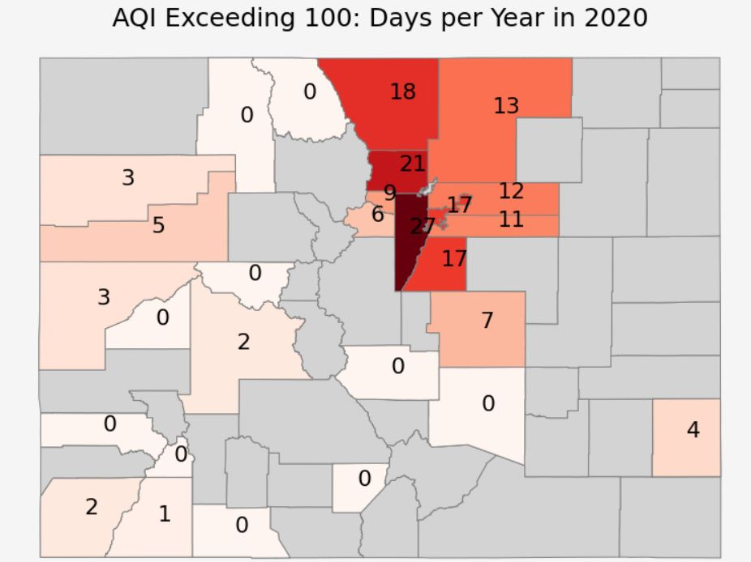

My name is Aaron Doherty, I'm a Geospatial Sciences major at MSU Denver. I graduated in December 2022. Here are some of my maps from classes and side projects during the last few years:
Watch our MSU Denver 2021 Earth Lab Summer Internship Presentation (me @ ~ 6:00) HERE
Link to our 2021 Earth Lab Summer Internship Blog Post HERE
Portland Transportation Mapping ArcGIS Desktop:
Population Density Methods ArcGIS Desktop:

Flood and Evacuation Mapping ArcGIS Desktop:

COVID Mapping ArcGIS Desktop:

Cartography Final ArcGIS Desktop:

Cartography Final ArcGIS Desktop:

Restaurant Delivery Network ArcGIS Desktop:

Remote Sensing Classification ArcGIS PRO:

Remote Sensing Change Detection Summit County, CO. ArcGIS PRO:

Earth Lab Summer 2021 Internship. Python/Jupyter Notebook:

Earth Lab Summer 2021 Internship. Python/Jupyter Notebook:
Earth Lab Summer 2021 Internship. Python/Jupyter Notebook:
GIS Applications Assignment QGIS:

Transportation Planning, Golden, CO. Roundabout Traffic Study QGIS:

Transportation Planning, Golden, CO. I Created a Roundabout Efficiency Traffic Study QGIS:

Public Health Data Dashboard ArcGIS Online:
Singapore Tourist Attractions Featuring Marina Bay Circuit #FormulaOne ArcGIS PRO:

Elevation/Hillshade from DEM Spatial Modeling in Raster ArcGIS PRO:
GPS Tracking Animation GPX Tracker iOS App and QGIS:
Cost/Distance Diffusion Spatial Modeling in Raster ArcGIS PRO:
Hydrology/Watershed Delineation ArcGIS PRO:

Residential Sidewalk Coverage in JEFFCO, Senior Capstone ArcGIS PRO:

Residential Sidewalk Coverage in JEFFCO, Senior Capstone ArcGIS PRO:

Ukraine Map With Cities Labels(Where's Crimea?) Geopandas Python Jupyter Notebook:

Stream Order Summit County, CO. Python Pysheds Jupyter Notebook:

3D Mapping BOP Downhill Beaver Creek, CO ArcGIS Pro:
3D Mapping Willow Springs, California ArcGIS Pro:
3D Mapping Multipatch Features With LIDAR ArcGIS Pro:

3D Mapping LIDAR Scene, Lakewood, Colorado ArcGIS Pro:
Restaurant Customer Delivery Network Geocoded Jupyter Notebook and ArcGIS Pro:
Time Series GIF 10,000 or so Deliveries ArcGIS Pro: